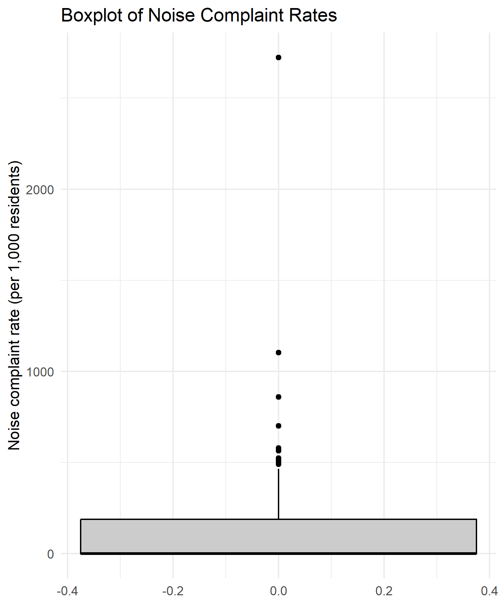
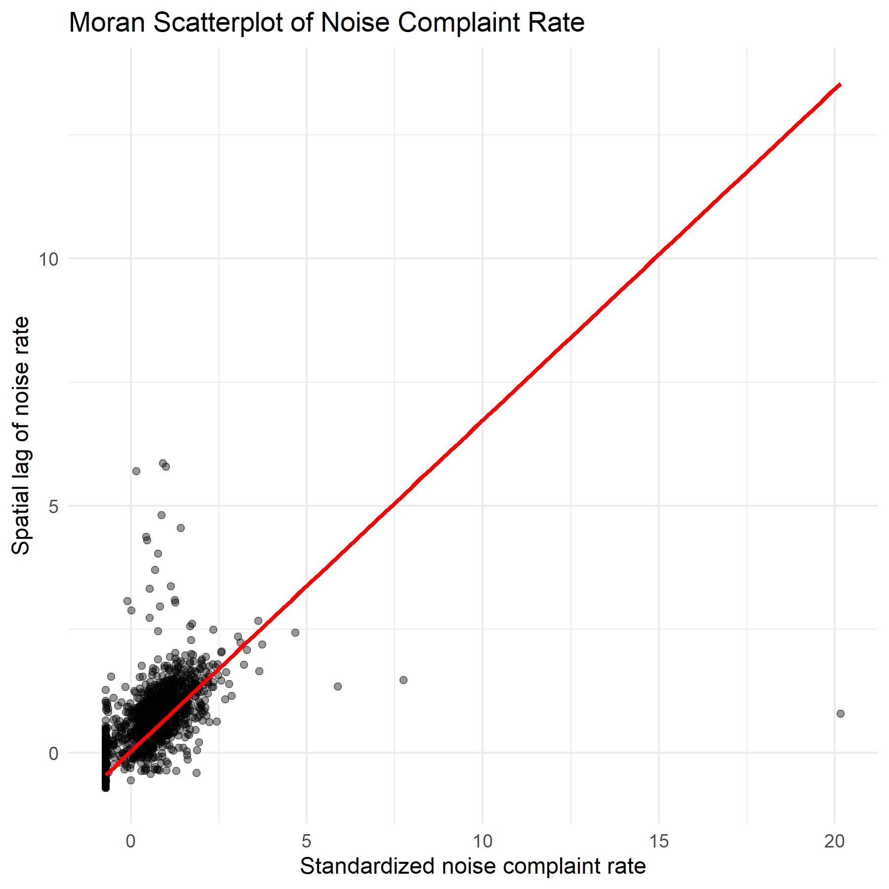
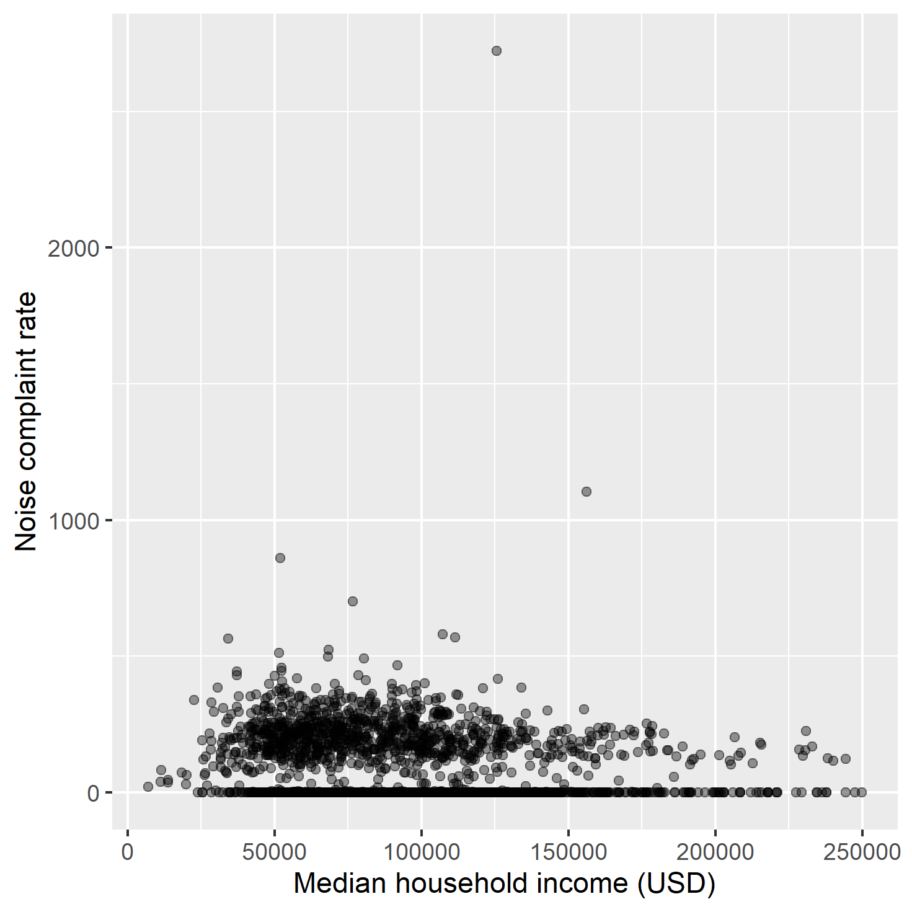
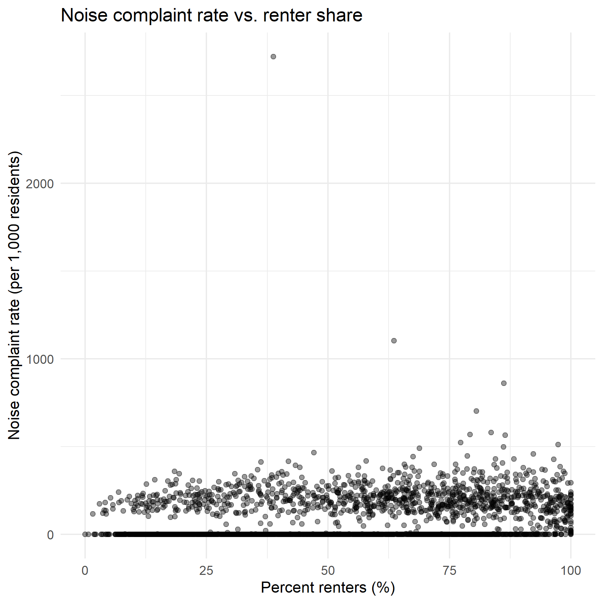
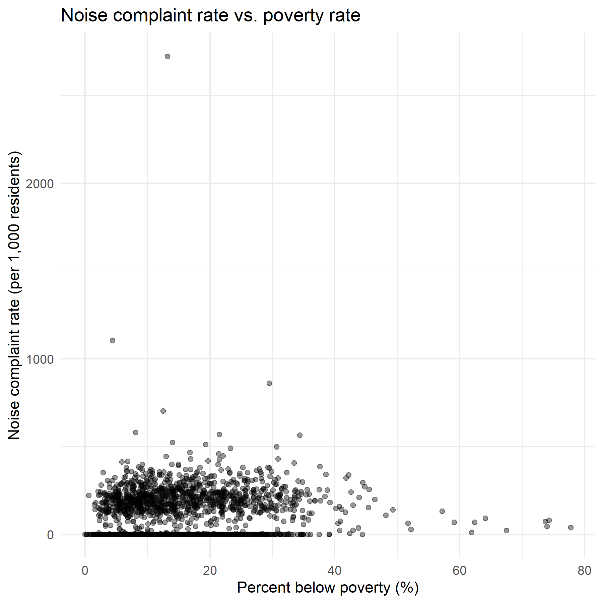
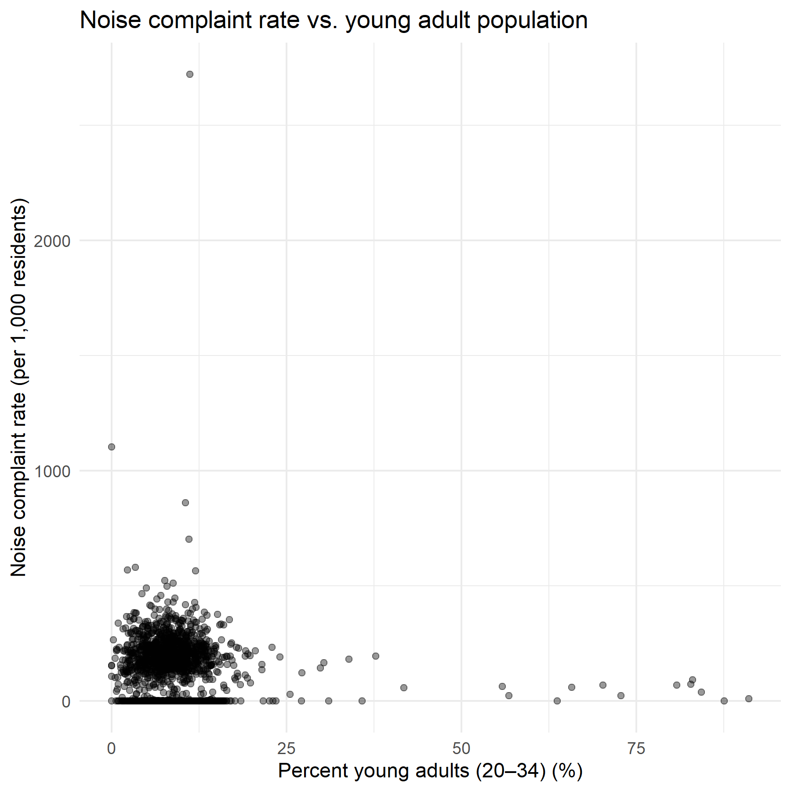
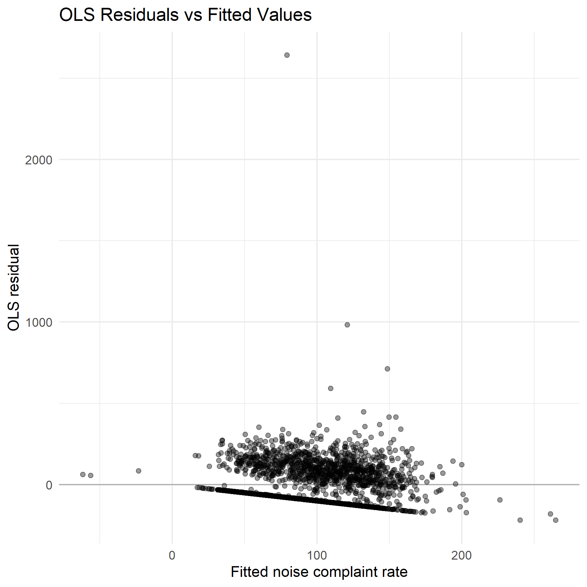
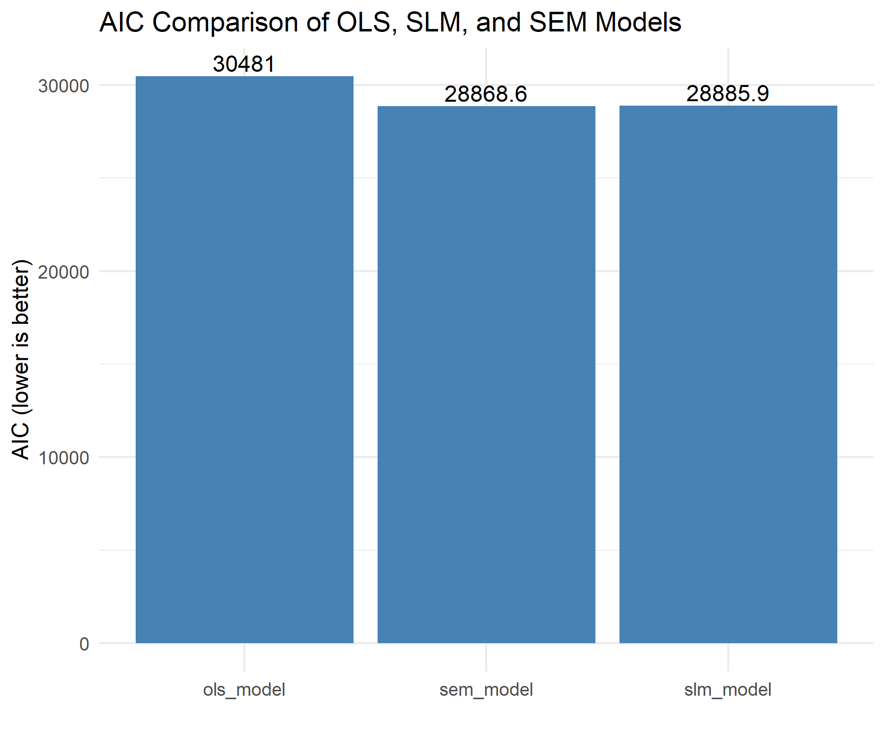
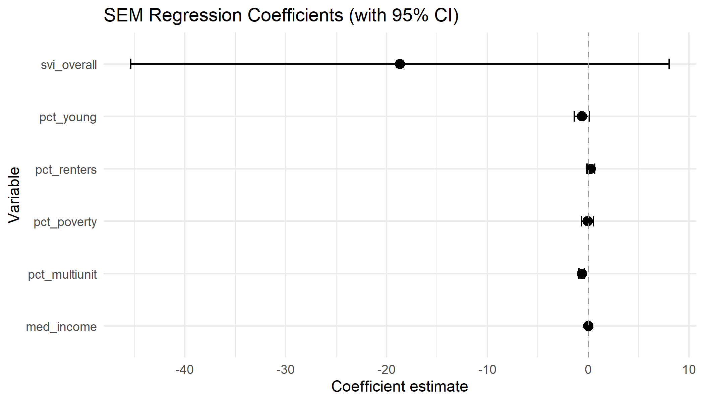
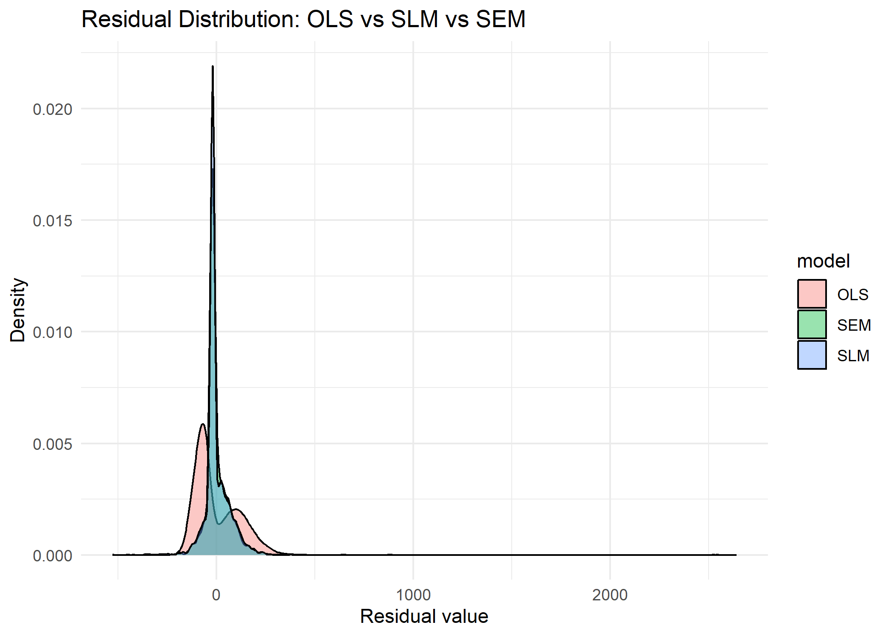

Overview
Urban noise is one of the most common — and most unequally distributed — environmental stressors in large cities. This project analyzes over 2,498 census tracts across Los Angeles County to answer a deceptively simple question: where do noise complaints cluster, and why do they occur where they do?
Using 311 service request data from 2022–2023, demographic variables from the American Community Survey, land-use indicators, and the CDC Social Vulnerability Index, the analysis applies a full spatial econometrics workflow — from exploratory mapping to LISA cluster detection to three regression models — to identify the socioeconomic and built-environment drivers of noise complaint density across LA neighborhoods.
Are noise complaints significantly clustered across Los Angeles, and how do socioeconomic and land-use characteristics shape these clusters? The answer turns out to be yes — with extremely strong spatial dependence that ordinary regression cannot capture.
Noise Rate Distribution

Distribution of noise complaint rates per 1,000 residents across LA census tracts — right-skewed with a long tail of high-complaint areas.

Boxplot of tract-level noise complaint rates — median, spread, and outliers across the 2,498-tract study area.
Live StoryMap
The full analysis — maps, scatterplots, model outputs, and spatial cluster visualizations — is presented as an interactive ArcGIS StoryMap.

Data Sources
- MyLA311 (2022–2023)Noise and nuisance complaint records — point-level, geocoded, filtered and aggregated to tracts per 1,000 residents. City of Los Angeles open data portal.
- ACS 5-Year EstimatesMedian household income (B19013), percent renters (B25003), housing structure type (B25024), age distribution (B01001), poverty rate (S1701). U.S. Census Bureau.
- TIGER/Line Tracts2023 census tract boundaries for Los Angeles County, loaded via the tigris R package for spatial alignment.
- CDC Social Vulnerability IndexCDC/ATSDR SVI 2020 (California) — composite socioeconomic disadvantage index for contextualizing complaint patterns.
Analytical Workflow
-
01
Data assembly & normalization
311 records filtered to noise/nuisance requests, geocoded, spatially joined to 2023 census tracts, and normalized by ACS population totals to create a tract-level noise complaint rate. Sociodemographic variables merged via shared GEOID.
-
02
Exploratory Spatial Data Analysis (ESDA)
Global Moran's I tested whether complaint rates were spatially autocorrelated across the county. Local Moran's I (LISA) identified statistically significant hotspot clusters, coldspot clusters, and spatial outliers at the neighborhood level.
-
03
OLS baseline regression
Ordinary Least Squares provided a baseline model predicting noise rate from socioeconomic variables. Residual analysis revealed systematic spatial patterns — violating the independence assumption and motivating spatial econometric models.
-
04
Spatial Lag Model (SLM) & Spatial Error Model (SEM)
SLM added a spatially lagged dependent variable to capture spillover effects between adjacent tracts. SEM modeled spatial dependence in the error term. Model fit compared via AIC and residual diagnostics.
Global Moran's I — Spatial Autocorrelation
The Global Moran's I test revealed extremely strong positive spatial autocorrelation in noise complaint rates across LA census tracts — complaints are not randomly distributed, they cluster significantly in space.

Moran's I scatterplot — steep positive slope confirms that tracts with high complaint rates are surrounded by other high-rate tracts.

Median household income vs. noise complaint rate — lower-income tracts systematically bear higher noise complaint burdens.
Interactive Map — Noise Rate by Tract
Explore the normalized noise complaint rate across all 2,498 LA County census tracts. The map reveals the sharp spatial gradient between the dense urban core and suburban periphery.
LISA — Local Spatial Cluster Detection
Local Moran's I (LISA) identified statistically significant hotspot and coldspot neighborhoods. Results confirm that noise inequality in LA is not random — it maps onto well-known patterns of socioeconomic stratification.
Central LA — Koreatown, Westlake, Pico-Union, Downtown. Dense multifamily housing, renter-heavy populations, high complaint density surrounded by similarly high tracts.
Affluent or suburban tracts — the Valley, Palos Verdes, hillside neighborhoods. Quiet areas surrounded by similarly quiet neighbors.
Transitional areas at the edges of hotspot clusters — tracts with elevated complaints surrounded by lower-rate neighbors.
Quiet tracts embedded within noisier surroundings — spatial anomalies highlighting localized noise management or underreporting.
Interactive Map — Noise Rate vs. Median Income
This bivariate map overlays noise complaint density with median household income, making the environmental justice dimension of noise distribution directly visible.
Predictor Relationships
Bivariate scatterplots showing the relationship between noise complaint rate and each socioeconomic predictor variable used in the regression models.

Noise rate vs. % renters — renter-heavy tracts show consistently higher complaint density, significant in OLS and SLM.

Noise rate vs. poverty rate — positive relationship confirms that lower-income tracts bear a disproportionate noise burden.

Noise rate vs. young adults (20–34) — negative relationship across all three models; younger neighborhoods report fewer complaints.
Regression Models — OLS → SLM → SEM
OLS regression established significant predictors but residual analysis showed systematic spatial clustering — violating OLS assumptions and requiring spatial econometric models.
Identifies significant predictors but violates the independent residuals assumption. Residuals show systematic spatial patterns.
Adds a spatially lagged dependent variable. Strong ρ confirms that a neighborhood's noise rate is strongly predicted by its neighbors'.
Models spatial dependence in the error term. Best AIC fit among all three models. ✓ Best fit
Variable Significance Across Models
| Variable | Description | OLS | SLM | SEM | Direction |
|---|---|---|---|---|---|
| pct_renters | % households renting | ✓ Sig | ✓ Sig | — | + |
| pct_poverty | % below poverty line | ✓ Sig | — | — | + |
| pct_young | % adults age 20–34 | ✓ Sig | ✓ Sig | ✓ Sig | – |
| med_income | Median household income | — | — | ✓ Sig | – |
| pct_multiunit | % multi-family housing | — | ✓ Sig | ✓ Sig | – |
Model Diagnostics & Residual Analysis

OLS residuals vs. fitted — non-random pattern confirms spatial dependency, motivating the move to spatial econometric models.

AIC comparison — SEM achieves the lowest AIC, confirming that spatial error structure explains noise patterns better than pure spillover (SLM) or no spatial modeling (OLS).

SEM coefficient plot — direction and significance of each predictor after accounting for spatial error dependence. Income effect becomes clearly negative.

Residual distribution comparison across OLS, SLM, and SEM — SEM residuals most closely approximate a normal distribution, validating model fit.
Key Findings
- Noise is highly clustered. Global Moran's I confirms extremely strong positive spatial autocorrelation — noise complaints do not occur randomly across LA's neighborhoods.
- Renters and lower-income residents bear a higher noise burden. Percent renters and poverty rate are significant positive predictors of complaint density in OLS and SLM models.
- Income is protective — but only in spatial models. Median household income shows a significant negative effect in SEM, confirming that affluence reduces noise exposure when unobserved spatial processes are properly controlled.
- Noise is a contagious phenomenon. The SLM spatial lag coefficient ρ = 0.74 means that a neighborhood's noise level is strongly predicted by its neighbors' — complaints spill across boundaries.
- Young neighborhoods report fewer complaints. The negative effect of young adult share may reflect noise tolerance, different 311 usage patterns, or genuine behavioral differences in reporting.
- SEM outperforms OLS and SLM. The Spatial Error Model achieves the best AIC fit, confirming that unobserved spatial processes — not just neighbor spillover — are the primary driver of structured noise patterns.
The High–High LISA clusters — concentrated in Koreatown, Westlake, Pico-Union, and Downtown — are predominantly lower-income, renter-heavy, and minority neighborhoods. This reflects a well-documented pattern of environmental burden falling disproportionately on communities with the least political and economic power to address it.
Policy Implications
Direct noise enforcement resources to High–High LISA cluster neighborhoods — Koreatown, Westlake, and Pico-Union — where complaint density and spatial spillover are both highest.
Improve acoustic insulation requirements in renter-heavy, multifamily housing tracts. Noise burden in dense residential areas is partly a structural problem addressable through building codes.
Treat noise complaint density as an environmental justice indicator. 311 analytics can serve as an early warning system for neighborhood stress before more severe decline patterns emerge.
Use spatially modeled 311 data — not raw counts — as input to urban monitoring systems. Normalizing by population and accounting for spatial dependence transforms complaint data into a meaningful policy signal.
Future Work
Three directions would strengthen this analysis. First, integrating land-use zoning and night economy data (bars, venues, commercial density) would sharpen the built-environment predictors. Second, multi-year time-series spatial models would reveal whether noise inequality is growing or shrinking. Third, comparing 311 patterns against actual decibel readings from street sensors would clarify how much of the spatial signal reflects real acoustic exposure versus differential reporting behavior across communities.